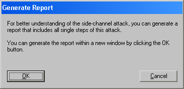

This dialog window is shown if you press the Generate report button in the side-channel attack against the hybrid encryption protocol dialog.

By clicking the OK button you can create a report of the side-channel attack. The report with will be generated in the CrypTool main window.